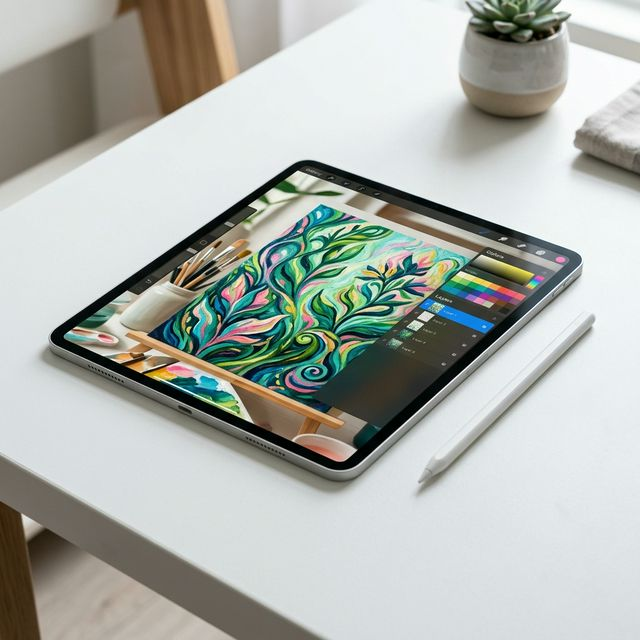
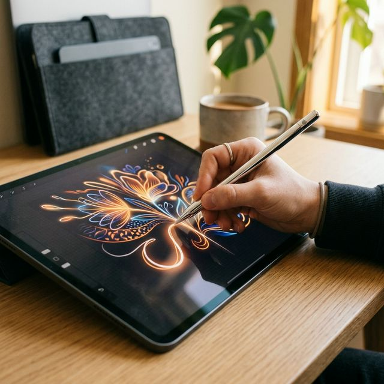

2026 애플 아이패드 라인업 완전 분석: 이미 등장한 M4 에어부터 가을 출시 예정 12세대·미니 8세대 스펙 루머까지
"기다릴까, 지금 살까?" 아이패드를 구매하려는 사람이라면 누구나 한번쯤 겪어보는 애플 특유의 딜레마입니다. 특히 2026년은 아이패드 라인업이 '상반기 에어 출시 → 하반기 기본형 + 미니 대규모
업데이트'라는 독특한 패턴으로 흘러가고 있어, 구매 타이밍을 잡기가 그 어느 해보다 복잡합니다. 이 글에서는 현재까지 해외 주요 테크 매체(Macrumors, MacWorld, 9to5Mac)를 통해
유출된 2026년 전체 아이패드 로드맵을 한 자리에 정리하고, 각 모델별로 '지금 사야 하는 사람 vs 기다려야 하는 사람'을 명쾌하게 분류해 드립니다. 구매를 결정하기 전, 반드시 이 글을 끝까지
읽어주세요.

▲ 2026년 애플은 아이패드 전 라인업에 Apple Intelligence를 탑재하는 것을 최우선 전략으로 채택했습니다. (ratio 1:1)
1. 2026 아이패드 라인업 현황: 무엇이 나왔고, 무엇이 남았나?
2026년 상반기를 기준으로 아이패드 시장의 판도는 다음과 같이 정리됩니다. 먼저 아이패드 에어(M4)는 이미 상반기에 출시가 공식 확정된 상태입니다. M4 칩셋을 탑재한
에어는 전 모델 대비 처리 성능이 크게 향상되었으며, Apple Intelligence(AI 기능) 완전 지원이 가능합니다. 반면 아직 기다려야 하는 두 모델이 있습니다.
📊 2026 아이패드 출시 로드맵 요약 (루머 기반)
- 아이패드 에어 (M4) 출시 확정 — 2026년 상반기 출시. Apple
Intelligence 완전 지원.
- 12세대 기본형 아이패드 가을 예정 — A18 또는 A19 칩, 8GB RAM, Wi-Fi 7.
Apple Intelligence 지원이 핵심 목표. 가격 약 $349 예상.
- 아이패드 미니 8세대 가을~연말 예정 — OLED 디스플레이 전환, 화면 크기 8.5~8.7인치
확대, A19 Pro 또는 A20 Pro 칩 탑재 루머.
애플의 2026년 태블릿 전략을 한 문장으로 요약하면 이렇습니다: "전 라인업에 Apple Intelligence를." 현재 A16 칩을 탑재한 11세대 기본형 아이패드는
온디바이스 AI 기능인 Apple Intelligence를 지원하지 못하는 유일한 아이패드 모델입니다. 이 문제를 해결하는 것이 12세대 기본형 출시의 가장 핵심적인 이유입니다.
2. 12세대 기본형 아이패드: 'Apple Intelligence 지원'이 혁명이다 가을 예정
현재 11세대 아이패드(A16 칩)를 사용 중인 분들에게는 다소 충격적인 사실이 하나 있습니다. 애플이 공들여 홍보하는 AI 기능인 Apple Intelligence(시리 고급 모드, 글쓰기 도구,
AI 이미지 생성 등)가 A16 칩 탑재 기본형 아이패드에서는 전혀 작동하지 않는다는 점입니다. Apple Intelligence를 사용하려면 최소 A17 Pro 이상의
칩셋과 8GB RAM이 필요한데, 현재 기본형 아이패드는 이 두 기준을 모두 충족하지 못합니다.
12세대 기본형 아이패드는 이 문제를 깔끔하게 해결합니다. 루머에 따르면 A18 또는 A19 칩이 탑재될 예정이며, RAM은 Apple Intelligence 지원을 위한 최소 기준인
8GB로 대폭 증가할 것으로 예상됩니다. 또한 애플의 신형 무선 칩 N1을 탑재해 Wi-Fi 7과 블루투스 6.0 지원이 추가될 가능성도
있습니다. 가격은 현행 모델과 동일한 약 349달러(한화 약 46만 원대) 수준을 유지할 것으로 보입니다.
11세대 기본형 vs 12세대 기본형 아이패드 핵심 스펙 비교 (예상)
| 항목 |
기존 11세대 (현재 판매 중) |
12세대 (가을 출시 예정) |
| 칩셋 |
A16 Bionic |
A18 또는 A19 (루머) |
| RAM |
8GB (미확인) |
8GB (Apple Intelligence 지원) |
| Apple Intelligence |
❌ 미지원 |
✅ 지원 예정 |
| Wi-Fi |
Wi-Fi 6E |
Wi-Fi 7 (N1칩, 루머) |
| 디스플레이 |
10.9인치 LCD 60Hz |
동일 유지 예상 (변경 없음) |
| 예상 가격 |
약 $349 (한화 약 46만원대) |
약 $349 (동일 유지 예측) |

▲ Apple Pencil과의 완벽한 시너지는 이미 검증되었습니다. 12세대 아이패드에서는 여기에 AI 지원까지 더해질 예정입니다. (ratio 1:1)
3. 아이패드 미니 8세대: OLED로 진화하는 손안의 강자 가을~연말 예정
지금까지 아이패드 라인업 내에서 다소 소외받던 '미니'에게 2026년은 가장 획기적인 변화의 해가 될 전망입니다. 루머에 따르면 아이패드 미니 8세대는 기존 LCD 방식의 디스플레이에서 벗어나
OLED 디스플레이를 탑재할 가능성이 높습니다. OLED 전환은 단순한 기술 업그레이드가 아닙니다. 완벽한 블랙 표현과 무한대의 명암비, 그리고 배터리 효율 향상이 동시에
이루어진다는 것을 의미합니다.
🍊 아이패드 미니 8세대, 이런 분들에게 특히 기대됩니다
- 전자책 대독자: OLED의 검은색 배경은 한밤중 독서 눈 피로를 획기적으로 줄여줍니다
- 한 손에 쥐고 다니는 휴대성을 최우선으로 생각하는 분
- 아이폰 Pro 이상의 영상 퀄리티를 작은 태블릿에서도 즐기고 싶은 분
화면 크기 역시 기존 8.3인치에서 8.5~8.7인치로 소폭 확대될 수 있다는 루머가 나오고 있습니다. 칩셋은 A19 Pro 혹은 A20 Pro가 탑재될 것으로 전망되며,
RAM 역시 8GB 이상으로 올라가 Apple Intelligence 전 기능을 완벽하게 지원할 것으로 보입니다.
4. 지금 사야 하는 사람 vs. 기다려야 하는 사람
▲ 아이패드 선택의 핵심은 '지금 필요한 기능이 현재 모델에 있는가'를 냉정하게 판단하는 것입니다. (ratio 1:1)
어떤 아이패드를 사야 하는지, 아니면 기다려야 하는지 많은 분들이 망설이고 있습니다. 아래의 가이드라인이 결정에 도움이 될 것입니다.
✅ 지금 당장 아이패드 에어(M4) 또는 프로를 구매해도 되는 사람
- 당장 학교 수업, 업무 보조, 영상 편집 등 실용 목적으로 태블릿이 필요한 분
- Apple Intelligence를 이미 체험해보고 싶은 분 (M4에어, 프로 모두 완벽 지원)
- 현재 구형 아이패드(iPad 6세대 이하)를 사용 중이어서 성능 체감이 확실한 분
⏳ 가을(2026 하반기)까지 기다리는 것이 좋은 사람
- Apple Intelligence를 가장 저렴한 가격에 써보고 싶은 분 (12세대 기본형 예약 대기)
- 한 손에 쏙 들어오는 소형 태블릿을 원하면서 OLED 화질에 집착하는 분 (미니 8세대)
- 현재 11세대 아이패드를 사용 중이고, AI 기능을 반드시 써보고 싶은 분
5. 교육 할인 + 카드사 혜택으로 최저가 구매하는 법
애플 아이패드를 가장 저렴하게 사는 가장 확실한 방법은 애플 공식 교육 스토어(Education Store)를 이용하는 것입니다. 대학생 또는 대학원생, 교직원이라면 공식
홈페이지 edu스토어에서 약 5~10% 수준의 교육 할인을 받을 수 있습니다. 여기에 카드사별 청구 할인이나 무이자 할부 혜택을 추가로 결합하면 공식가보다 10% 이상 저렴하게 구매하는 것도
가능합니다.
또한 새 모델이 나올 때마다 이전 모델이 최대 20~30% 가량 가격이 떨어지는 것이 애플 공개 제품 시장의 법칙입니다. 12세대 기본형이 가을에 출시되면, 11세대 기본형의 중고·공식 리퍼 가격이
매우 합리적인 수준으로 내려올 것입니다. 처음 아이패드를 사보시는 분이라면 이 타이밍을 노려보시는 것도 좋은 전략입니다.
2026년 애플 아이패드의 핵심 흐름은 단 하나입니다. 'Apple Intelligence의 전 라인업 확산'. 현재 M4 에어를 사든, 가을 12세대 기본형을 기다리든, 그 선택의 기준은 결국
"지금 당장 AI 태블릿이 필요한가"에 달려 있습니다. 정리하자면 — 지금 당장 생산성을 높이고 싶다면 M4 에어, AI를 최저가에 원한다면 12세대 기본형 가을 출시를
기다리세요. 🍎
데이터 출처: Macrumors, MacWorld, 9to5Mac, PhoneArena 2026 아이패드 루머 종합 분석 (루머 기반 정보로 실제 발표 내용과 다를 수
있음)
#아이패드2026
#아이패드신제품
#아이패드에어M4
#12세대아이패드
#아이패드미니8세대
#OLED아이패드
#AppleIntelligence
#아이패드구매추천
#아이패드교육할인
#애플신제품2026
#아이패드A19
#애플2026하반기